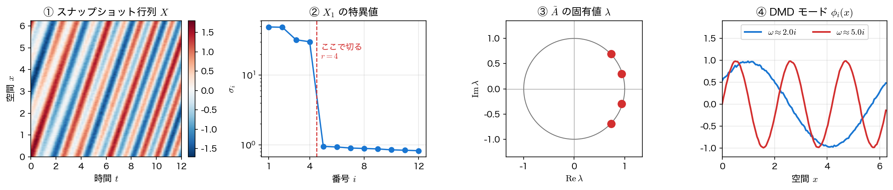

DMD のアルゴリズム
DMD の出発点は乱暴なほど単純である。時系列に並んだスナップショットを見て、「隣り合う \(2\) 枚の間に、時刻によらない同じ線形写像が働いている」と仮定してしまう。この仮定はほとんどの実データで厳密には成り立たないが、成り立つと思って最小二乗で \(A\) を当てはめると何が得られるか を調べるのが DMD である。
スナップショット行列と最良の線形写像
時刻 \(t_k=k\Delta t\) における状態（\(n\) 次元のベクトル）を \(x_k\) とし、\(m\) 枚のスナップショットを並べた行列を
と書く。\(1\) 列ずらした \(2\) つの行列
を作れば、仮定 \(x_{k+1}=Ax_k\) は \(X_2=AX_1\) と一括して書ける。これを満たす \(A\) を最小二乗で求めるのが DMD の定義であり、第13回の擬似逆行列がそのまま答えになる。
ここで \(X_1^{+}=V\Sigma^{+}U^\top\) は \(X_1\) の擬似逆行列である。等号ではなく \(\in\) と書いたのは、最小値を与える \(B\) が一つとは限らないからである。\(n\) が大きいときは \(X_1\) の階数が \(m-1\) 以下にしかならず、残差を最小にする \(B\) は無数にある。擬似逆行列が返すのはそのうち Frobenius ノルムが最小のもの ── データが張らない方向には何もしない、いちばん大人しい解である。
\(A\) をそのまま作ってはいけない
定義どおりに \(A=X_2X_1^{+}\) を計算すると \(n\times n\) の行列ができる。流体の速度場のように \(n=10^5\) なら \(10^{10}\) 要素、\(80\) GB である。しかも \(A\) の階数はたかだか \(m-1\)（スナップショット枚数）しかないので、その巨大な行列のほとんどは零空間の情報でしかない。必要なのは \(A\) そのものではなく、その上位いくつかの固有値と固有ベクトル である。これを \(r\times r\) の小さい行列の固有値問題に落とすのが次節の縮約である。
SVD による低次元化
\(X_1\) の SVD を階数 \(r\) で打ち切る。
\(U_r\) の列はデータが張る \(r\) 次元部分空間の正規直交基底 ── つまり第13回の POD モードそのものである。この基底に \(A\) を射影した \(r\times r\) 行列を
と定める。右辺には \(A\) が現れないので、\(n\times n\) の行列を一度も作らずに済む。
ここで一つはっきりさせておく。\(\tilde A\) から得られる固有値が 元の \(A\) の固有値そのもの になるのは、打切りをしないとき（\(r=\operatorname{rank}X_1\)）か、\(U_r\) の張る空間が \(A\) で閉じている（\(A\)-不変である）ときに限る。手前で切ると、得られるのは \(X_1\) をランク \(r\) に丸めてから最小二乗を解いた別の作用素
の固有値である。\(U_r\) がデータの張る空間をほぼ覆っていれば \(A_r\simeq A\) なので実用上は困らないが、「切り詰めても真の固有値の一部が残る」と思い込んではいけない ── ランクが足りないときに出てくるのは真の固有値の部分集合ではなく どれとも違う値 である（演習1 で数値的に確かめる）。
\(\tilde A w_i=\lambda_iw_i\) を解いたあと、対応する \(n\) 次元のモードは \(2\) 通りの作り方がある。
前者を 射影 DMD モード、後者を exact DMD モード と呼ぶ。後者は \(A_r\phi_i=\lambda_i\phi_i\) を厳密に満たす（打切りがなければ \(A_r=A\) なので \(A\phi_i=\lambda_i\phi_i\) になる）ので、以下ではこちらを使う。実装では \(1/\lambda_i\) の因子を振幅 \(b\) に吸収させ、\(\Phi=X_2V_r\Sigma_r^{-1}W\) と書くことが多い。\(\lambda_i=0\) のモードだけはこの式で作れないので、そのときは \(\phi_i^{\text{proj}}\) を使う。
最後に、初期状態を各モードに分解した係数 振幅 \(b\) を最小二乗で決める。
この和の形が書けるのは \(\tilde A\) が 対角化可能 で、しかも \(\Phi\) の列が再構成したい状態を張っているときである。固有値が重複して固有ベクトルが足りない行列（欠陥行列）では、第11回の重解の場合と同じく \(k\lambda^k\) のような項が要る。実データでは重複がぴたり起きることはまずないので、以下ではこの形で進める。
以上を \(10\) 行ほどの関数にまとめておく。以降のページでもこの dmd をそのまま使う。
import numpy as np
def dmd(X, dt, r):
"""厳密 DMD。固有値 λ・連続時間 ω・モード Φ・振幅 b・特異値を返す。"""
X1, X2 = X[:, :-1], X[:, 1:] # 1 列ずらした 2 つの行列
U, S, Vh = np.linalg.svd(X1, full_matrices=False)
Ur, Sr, Vr = U[:, :r], S[:r], Vh[:r].conj().T # ランク r で打ち切る
At = Ur.conj().T @ X2 @ Vr / Sr # 縮約した Ã（r×r）
lam, W = np.linalg.eig(At) # Ã の固有値・固有ベクトル
Phi = X2 @ Vr / Sr @ W # exact DMD モード
b = np.linalg.lstsq(Phi, X[:, 0], rcond=None)[0] # 初期振幅
return lam, np.log(lam.astype(complex))/dt, Phi, b, S
def reconstruct(lam, Phi, b, nt):
"""Φ diag(b) λ^k を時刻 0..nt-1 について並べる。"""
return Phi @ np.array([b*lam**k for k in range(nt)]).T
\(2\) か所だけ補足しておく。転置に .conj() が付いているのは、データが複素数のときに \(U_r^\top\) を共役転置 \(U_r^{*}\) に読み替える必要があるからである（実数データなら何も変わらない）。\(\log\) の前の .astype(complex) は、\(\lambda\) がすべて実数で返ってきたときの備えである ── numpy は実数配列の対数に負の数を渡すと nan を返すので、\(\lambda<0\)（\(1\) ステップごとに符号が反転する振動）のモードがあると \(\omega\) が消えてしまう。複素数として渡せば主値 \(\log|\lambda|+i\pi\) が返る。
固有値が既知の系で確かめる
正しく動いているかは、答えの分かっている問題で確かめるしかない。\(3\) 次元の離散系
を用意する。固有値は \(0.99e^{\pm0.3i}\)（減衰しながら回転）と \(0.95\)（単調減衰）である。これを \(200\) 次元の直交基底 \(Q\) で埋め込み、\(x_k=Qz_k\) を観測データとする。観測の次元は \(200\) だが、動いているのは \(3\) 次元だけという状況である。
rng = np.random.default_rng(0)
a, th, dt = 0.99, 0.30, 0.1
Ar = np.array([[a*np.cos(th), -a*np.sin(th), 0.0],
[a*np.sin(th), a*np.cos(th), 0.0],
[0.0, 0.0, 0.95]])
Q, _ = np.linalg.qr(rng.normal(0, 1, (200, 3))) # 200 次元へ埋め込む
z0 = np.array([1.0, 0.0, 0.5])
Z = np.column_stack([np.linalg.matrix_power(Ar, k) @ z0
for k in range(60)])
X = Q @ Z # 観測データ 200×60
lam, om, Phi, b, S = dmd(X, dt, 3)
lt, ld = np.sort_complex(np.linalg.eigvals(Ar)), np.sort_complex(lam)
print("特異値 :", np.round(S[:5], 4))
print("真の λ :", np.round(lt, 6))
print("DMD の λ :", np.round(ld, 6))
print(f"λ の最大差 = {np.abs(ld - lt).max():.2e}")
print("ω :", np.round(np.sort_complex(om), 6))
特異値 : [4.3161 4.0563 1.5421 0. 0. ]
真の λ : [0.945783-0.292565j 0.945783+0.292565j 0.95 +0.j ]
DMD の λ : [0.945783-0.292565j 0.945783+0.292565j 0.95 +0.j ]
λ の最大差 = 6.66e-16
ω : [-0.512933+0.j -0.100503-3.j -0.100503+3.j]
特異値は \(4\) 番目からぴたりと零になり、\(200\) 次元のデータが実は \(3\) 次元しか動いていないことが読み取れる。ランクを \(r=3\) に切って得た固有値は真の値と機械精度で一致した。連続時間の \(\omega=\log\lambda/\Delta t\) も、\(\log(0.99)/0.1=-0.1005\) と \(0.30/0.1=3\)、\(\log(0.95)/0.1=-0.5129\) を正しく再現している。
巨大な \(A\) を作る必要がなかったことも確かめておく。ここでは \(n=200\) と小さいので、あえて \(A=X_2X_1^{+}\) を陽に作って比べてみる。
A_hat = X[:, 1:] @ np.linalg.pinv(X[:, :-1]) # 200×200
print("A_hat の形 :", A_hat.shape)
print("A_hat の階数 :", np.linalg.matrix_rank(A_hat))
print(f"真の A との最大差 = {np.abs(A_hat - Q @ Ar @ Q.T).max():.2e}")
ev = np.linalg.eigvals(A_hat)
print("|λ| の大きい 4 個:", np.round(ev[np.argsort(-np.abs(ev))[:4]], 6))
print(f"|A_hat Φ - Φ Λ| = {np.abs(A_hat @ Phi - Phi*lam).max():.2e}")
A_hat の形 : (200, 200)
A_hat の階数 : 3
真の A との最大差 = 1.35e-16
|λ| の大きい 4 個: [ 0.945783+0.292565j 0.945783-0.292565j 0.95 +0.j
-0. +0.j ]
|A_hat Φ - Φ Λ| = 1.67e-16
\(200\times200\) の \(A\) を作っても、意味のある固有値は \(3\) 個だけで残りは零、しかもその \(3\) 個は \(3\times3\) の \(\tilde A\) から得たものと同じである。最後の行は exact DMD モードが \(A\phi_i=\lambda_i\phi_i\) を厳密に満たしていることを示している ── \(\tilde A\) という小さい行列を経由しても、得られるのは大きい \(A\) の固有ベクトルそのものである。ここでそれが言えるのは \(r=3=\operatorname{rank}X_1\) と 打切りをしていない からで、前節に書いたとおり \(A_r\) と \(A\) が一致している場合である。

再構成と計算量
固有値・モード・振幅がそろえば、任意の時刻の状態を \(x_k\simeq\Phi\,\mathrm{diag}(\lambda_i^k)\,b\) で作れる。これは モード分解された解の公式 であり、第11回で線形系の解を \(\mathbf x(t)=\sum_ic_ie^{\lambda_it}\mathbf v_i\) と書いたのとまったく同じ形をしている。違うのは、\(\lambda_i\) と \(\mathbf v_i\) を方程式からではなく データから 得たという一点だけである。
Xk = reconstruct(lam, Phi, b, 60)
err = np.linalg.norm(X - Xk)/np.linalg.norm(X)
print("振幅 |b| :", np.round(np.abs(b), 4))
print("モードのノルム :", np.round(np.linalg.norm(Phi, axis=0), 4))
print("誤差 < 1e-12 :", err < 1e-12)
print("虚部 < 1e-12 :", np.abs(np.imag(Xk)).max() < 1e-12)
再構成は機械精度（相対誤差は \(10^{-14}\) 未満）で元データに戻る。データが実数なら固有値は実数か共役対で現れ、共役なモードが打ち消し合って再構成の虚部も零になる。
ここで誤差そのものではなく しきい値との比較 を印字したのには理由がある。\(10^{-15}\) 前後の丸め誤差は、BLAS の実装・CPU・numpy の版によって最後の数桁が変わる。手元で \(2.4\times10^{-16}\) になった量が別の環境では \(2.5\times10^{-16}\) になるのはごく普通のことで、これを「一致しない」と騒いでも仕方がない。機械精度の量については 「零とみなせるか」だけを問う のが正しい作法である。上の \(\lambda\) の最大差 \(6.66\times10^{-16}\) のような数字も、桁を見るためのもので、末尾の数字に意味はない。モードのノルムが \(0.99,0.99,0.95\) と \(|\lambda_i|\) に一致しているのは、\(\Phi=X_2V_r\Sigma_r^{-1}W\) が \(\phi_i^{\text{exact}}\) を \(\lambda_i\) 倍したものだからである。モードの大きさそのものには意味がなく、意味があるのは \(b_i\phi_i\) という積のほう である（\(\phi_i\) を \(c\) 倍すれば \(b_i\) が \(1/c\) 倍になるだけで、再構成は変わらない）。
計算量も見ておく。\(n\times m\) の SVD が \(O(nm^2)\)、\(r\times r\) の固有値問題が \(O(r^3)\)、モードの構成が \(O(nmr)\) で、\(n\) について線形 である。\(n=10^5\)、\(m=200\)、\(r=10\) でも数秒で終わる。\(A\) を陽に作る \(O(n^2m)\) とは比べものにならない。
スナップショットは等間隔でなければならない
\(\lambda\) から \(\omega=\log\lambda/\Delta t\) に直す段階で \(\Delta t\) が一定であることを使っている。そもそも \(X_1\) と \(X_2\) を「\(1\) 列ずらす」という作り方自体が、隣り合う列の時間差がどこでも同じであることを前提にしている。観測が不等間隔なら、補間して等間隔に直すか、観測時刻を直接式に持ち込む変種（optimized DMD、連続時間 DMD など）を使う。なお DMD with control という名前をよく見かけるが、これは外部入力 \(u_k\) がある系 \(x_{k+1}=Ax_k+Bu_k\) を扱う手法で、不等間隔サンプリングのための道具ではない。また \(\Delta t\) が大きすぎると速い振動が折り返してしまう ── 第3回のサンプリング定理がそのまま効いてくる話で、応用のページ で数値的に確かめる。
まとめ
- DMD は、スナップショットの列に \(x_{k+1}\simeq Ax_k\) を当てはめ、残差最小かつノルム最小の解 \(A=X_2X_1^{+}\) の固有値・固有ベクトルを求める手法である。
- \(n\times n\) の \(A\) は作らない。\(X_1\) の SVD で階数 \(r\) に切り、\(\tilde A=U_r^\top X_2V_r\Sigma_r^{-1}\) という \(r\times r\) の行列の固有値問題に落とす。計算量は \(n\) について線形になる。
- exact DMD モード \(\Phi=X_2V_r\Sigma_r^{-1}W\) が厳密に満たすのは、打切り作用素 \(A_r=X_2V_r\Sigma_r^{-1}U_r^\top\) に対する \(A_r\Phi=\Phi\Lambda\) である。打切りがなければ \(A_r=A\) なので、そのまま \(A\) の固有対になる（数値でも \(10^{-15}\) で確認できる）。
- 固有値が既知の \(3\) 次元系を \(200\) 次元に埋め込んだデータで、DMD は固有値を機械精度（差は \(10^{-15}\) 未満）で復元した。特異値の落ち方から「実質の次元は \(3\)」も読み取れる。
- 得られる表現 \(x_k\simeq\Phi\,\mathrm{diag}(\lambda_i^k)\,b\) は、第11回で方程式から導いたモード分解と同じ形である。
次は、この \(\lambda\) と \(\omega\) をどう読むか ── モードと固有振動の解釈 に進む。